严格依据加拿大 Mosby/Elsevier 5th 权威原版全真还原，逐页覆盖病床结构、体位安全、标准预防拿取被服、闭式床、开式床、有人床及婴儿床安全 11 条黄金法则。
After reading this chapter, the learner should be able to do the following:
完成本章学习后，学习者应能够做到以下各项：
• Identify the basic bed positions.
• 准确识别病床的基本体位（平卧位、低/半/高福氏卧位、特氏卧位与反特氏卧位）。
• Describe how to handle linen according to the rules of Standard Practice.
• 描述如何严格根据标准预防规范妥善拿取、运送及处理床品被服。
• List the types of bed linens used when making a client’s bed.
• 列举为服务对象铺床时所使用的各类被服织物（床褥垫、平单/床笠、吸水翻身中单、盖被、床罩及枕套）。
• Describe safety measures for bed making.
• 阐述铺床过程中的人身安全防护措施（高度调节、锁定脚轮、身体力学省力原则与防交叉感染）。
• Describe the differences between open and closed beds.
• 阐明开式床（暂空床）与闭式床（备用床）的区别、临床适用场景与铺法差异。
• Demonstrate the procedures described in this chapter.
• 熟练演示并规范操作本章详述的标准铺床规程（闭式床、开式床及卧床患者占用床铺法）。
Clients spend varying amounts of time in their beds, whether it is at home or in an agency. Some clients must be on complete bed rest and never get out of bed; some clients are on partial bed rest (getting up only to stretch or go to the bathroom); and some clients spend their waking hours out of bed, using the bed only to rest or sleep.
服务对象在床上度过的时间各不相同，无论是在私人居所还是照护机构中。有些案主必须实行绝对卧床休息（complete bed rest），完全不能下床；有些案主处于部分卧床休息状态（仅在舒展肢体或如厕时下床）；还有些案主在清醒时均离开床铺活动，仅在休息或夜间睡眠时使用病床。
It is important to know the different types of beds, how to position the beds for clients’ comfort, and how to make the beds. A clean, dry, and wrinkle-free bed promotes client comfort and safety and helps prevent skin breakdown and pressure injuries (see Chapter 22).
熟知各类病床的结构特点、掌握调节床铺体位以增进案主舒适度的方法，以及熟练掌握规范铺床技能极其重要。一张洁净、干燥、平整无皱褶的床铺能够极大促进案主的舒适与安全，并有效预防皮肤破损与压疮（压力性损伤，详见第 22 章）。
In facilities, beds are usually made in the morning after clients’ baths or while they are taking a shower or are out of the room. Clients usually like their beds made and rooms cleaned before visitors arrive. In private homes, beds are made according to the care plan and the client’s preferences.
在照护机构中，铺床通常在早晨案主沐浴后、或在案主淋浴及离开房间活动时进行。案主通常希望在访客到来前整理好床铺并清洁房间。在私人家庭中，铺床则严格根据照护计划及案主的个人偏好进行。
Linen must be straightened whenever it is loose or wrinkled and at bedtime. Check linen for crumbs after meals and remove crumbs. Linen should be changed whenever it becomes wet, soiled, or damp. Follow Standard Practices when changing linen soiled with blood, body fluids, excretions, or secretions.
床单一旦松动或出现皱褶，必须随时拉直整平，并在临睡前再次整理。餐后应仔细检查床单上是否有食物碎屑并及时清理。床品织物一旦潮湿、发潮或被污染，必须立即予以更换。更换沾有血液、体液、排泄物或分泌物的被服时，必须严格执行标准预防规范（Standard Practices）。
Clients’ rooms are furnished and equipped for comfort and safety in any facility:
在任何医疗照护机构中，案主的房间均配备有旨在保障舒适与安全的家具与设备：
Hospitals and many long-term care facilities have overbed tables. These tables can be positioned over the bed and the height adjusted for a client in bed or in a chair. The overbed table is used for placing meal trays, eating, reading, writing, and other activities. It is also used as a work area for bedside procedures. However, never place bedpans, urinals, or soiled linens on an overbed table. Always clean the table carefully after each use with the appropriate cleaning wipes, according to facility policy.
医院及诸多长期照护机构均配备有跨床桌。这种桌子可以横跨在病床上方，并可根据案主在床上或坐椅上的高度进行上下升降调节。床上桌用于摆放餐盘进餐、阅读、书写以及开展日常活动，亦可用作床旁护理操作的工作台面。然而，绝对严禁将便盆、尿壶或换下的污染被服放置在床上桌上。每次使用后，必须根据机构规定使用专用消毒湿巾仔细擦拭清洁台面。
Most hospitals and long-term care facilities have bedside stands for personal items (FIGURE 21.1). In private homes, bedside furniture varies—it could be a bedside stand or a small table, or there may be nothing at the bedside. Regardless of where the client is, furniture should be safely placed out of the client’s pathway.
大多数医院和长期照护机构都在床头配备有床头柜，用于存放个人洗护与日常用品（图 21.1）。在私人居家中，床边家具情况各异——可能是一个床头柜、小茶几，或者床边完全没有任何家具。无论案主身处何处，家具摆放必须安全稳妥，绝对不能阻挡案主的日常行走通道。
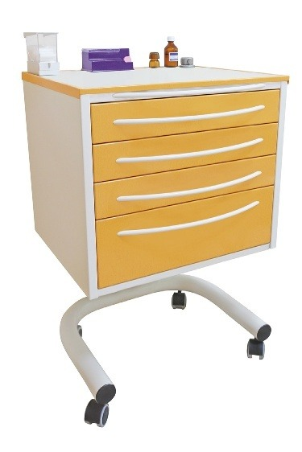
A hospital room usually has one or two chairs. Long-term care clients may bring their own chairs from home (FIGURE 21.2). Home care clients often have a favourite chair. Make sure that the chair is kept clean and free of food particles. Plump cushions regularly.
医院病房通常配备一到两把椅子。长期照护机构的案主可能会从家中带来自己的专属扶手椅（图 21.2）。居家案主通常有自己最钟爱的座椅。务必确保座椅洁净且无食物碎屑遗留，并定期拍打整理靠垫使其蓬松舒适。
Sorrentino 原版教材第 21 章共收录 10 个病床体位、床品配置与铺床实操核心学术词汇。支持实时模糊检索及「紧凑表格 / 记忆卡片」双模态自由切换。
| 英文术语 / 临床概念 | 中文对照 / 原书页码 | 教材标准学术释义与临床界定 |
|---|---|---|
| alternating pressure mattress /ˌɔːltərneɪtɪŋ ˈpreʃər ˈmætrəs/ | 交替充气减压床垫 p. 461 |
A special type of mattress that has alternating areas of pressure of air, gel, or water baffles to reduce the risk for pressure sores. p. 461
一种特殊的减压床垫，通过空气气囊、凝胶或水压隔室的交替充气与放气，周期性改变案主身体受压部位，以显著降低压疮发生风险。详见第 461 页。
|
| fitted sheet /ˈfɪtɪd ʃiːt/ | 床笠 / 定型底层大单 p. 469 |
A sheet (usually with elastic edges) tailored to fit a particular size of mattress. p. 469
一种专门裁剪缝制以贴合特定床垫尺寸的底层床单，四角通常带有弹性松紧带，可牢固包裹床垫四角防止滑脱皱褶。详见第 469 页。
|
| incontinence pad /ɪnˈkɒntɪnəns pæd/ | 防渗失禁垫 / 吸水护理垫 p. 466 |
A pad placed in the centre of the bed on top of the bottom sheet to protect the bedsheets from body fluids. Also called absorbent pad or soaker pad. p. 466
放置在床中部底层大单之上、用于防止案主体液（尿液、粪便、引流液）渗漏弄脏床单的专用防护垫。在临床上亦称吸水垫（absorbent pad）或浸润垫（soaker pad）。详见第 466 页。
|
| mitred corner /ˈmaɪtəd ˈkɔːnər/ | 斜角折叠法 / 规整信封折角 p. 466 |
A type of fold done to the top layers of bedding which keeps the layers neat and in place. p. 466
一种在铺设床单和盖被上层织物时制作的特殊折角手法（呈45度整齐信封角），能够使床品平整服帖、牢固锁紧在床垫下方而不易脱落。详见第 466 页。
|
| closed bed /kloʊzd bed/ | 闭式床 / 备用床 p. 468 |
A bed made when it is expected to be unoccupied for several hours or days; the top linen is pulled up to the head of the bed to keep it clean. p. 468
当病床预计在数小时或数天内无人占用时所铺设的整洁床铺；上层被服完全拉至床头平整覆盖，以保持床单洁净防尘，随时备新入住案主使用。详见第 468 页。
|
| open bed /ˈoʊpən bed/ | 开式床 / 暂空床 p. 473 |
A bed made shortly before it is to be occupied; top linens are fan-folded to the foot of the bed so the client can get into bed easily. p. 473
在案主即将上床休息前铺设的开放式床铺；将盖被等上层被服以扇形折叠至床尾，便于能走动或短时间离床的案主轻松上床躺下。详见第 473 页。
|
| occupied bed /ˈɒkjʊpaɪd bed/ | 有人床 / 卧床患者占用床 p. 473 |
A bed made while the client remains in the bed due to illness or injury; linens are changed one side at a time while the client is turned. p. 473
当案主因伤病、虚弱无法离床时，在案主卧床状态下进行的床品更换与铺设；照护人员协助案主侧卧，分侧逐步完成旧单卷除与新单平整铺设。详见第 473 页。
|
| turning pad / transfer sheet /ˈtɜːrnɪŋ pæd/ | 翻身中单 / 减压转移垫 p. 466 |
A pad placed over the middle of the bottom sheet used to turn and move the client in bed, reducing shear and friction. p. 466
铺设于底层大单中部的小型织物中单，照护者利用其边缘在床面上移动或翻转案主，以最大限度消除摩擦力与剪切力，保护案主脆弱皮肤。详见第 466 页。
|
| Fowler's position /ˈfaʊlərz pəˈzɪʃən/ | 福氏卧位 / 坐式卧位 p. 463 |
A semi-sitting to upright bed position where the head of the bed is elevated between 15 and 90 degrees (Low: 15–30°, Semi: 30–45°, High: 45–90°). p. 463
床头抬高一定角度的半坐位至直坐位体位，分为低福氏位（15–30度）、半福氏位（30–45度）和高福氏位（45–90度），利于案主呼吸、进食并改善视线。详见第 463 页。
|
| Trendelenburg position /trɛnˈdɛlənbɜːrɡ pəˈzɪʃən/ | 特伦德伦伯格卧位 / 头低脚高位 p. 463 |
A bed position where the head of the bed is lowered and the foot of the bed is elevated; requires a physician's order and is used for postural drainage. p. 463
一种床头倾斜降低、床尾整体抬高的特殊体位；必须遵医嘱执行，常用于促进肺部体位引流或特定休克急救。详见第 463 页。
|
Standard in hospitals and long-term care facilities, privacy curtains are suspended from the ceiling and pulled around the bed before care (FIGURE 21.3). Privacy curtains prevent others from seeing the client, but they do not block sound or prevent conversations from being overheard. In home care settings, portable screens can be used for privacy (FIGURE 21.4).
在医院和长期照护机构中，隐私隔帘属于标准配置，悬挂于天花板轨道上，在实施任何照护操作前必须完全拉合围绕病床（图 21.3）。隐私帘可以阻挡外界视线，但无法隔绝声音或防止交谈内容被旁人听见。在居家照护环境中，可使用便携式折叠屏风来保护案主的身体隐私（图 21.4）。
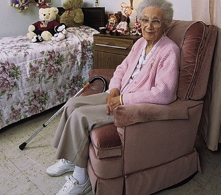
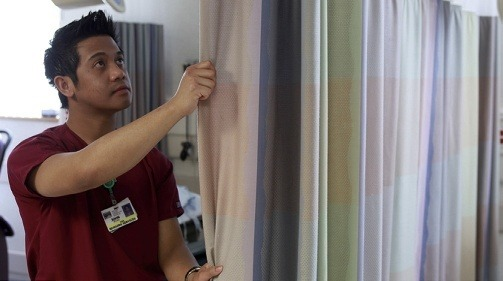
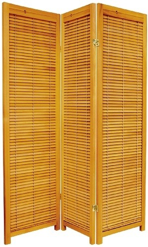
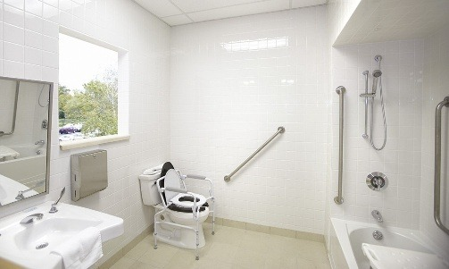
Hospitals and long-term care facilities provide closet and drawer space for the client’s clothing. Government legislation in some provinces states that long-term care clients must have easy access to the closet and its contents.
医院和长期照护机构为案主的衣物提供衣橱和抽屉。加拿大某些省份的政府法律法规明确规定：长期照护案主必须能够方便、无阻碍地取用其衣橱及其内部存放的个人物品。
Most facility bathrooms have a sink, call bell, mirror, and toilet with handrails (FIGURE 21.5), and some have showers. Toilets in some facilities are higher than regular toilets, which makes moving to and from wheelchairs easier for clients, especially for clients with joint problems. Some bathrooms are private, while others are shared. Most bathrooms in private homes do not have elevated toilets and handrails. In such cases, you must make sure the client’s bathroom is clean and safe.
大多数机构卫生间配备有面盆、紧急呼叫铃、梳妆镜以及装有安全扶手的座便器（图 21.5），部分还配备淋浴间。机构中的马桶座通常比普通家庭马桶高，这极大便利了坐轮椅案主的移位转移，尤其是患有严重关节病变的案主。卫生间有些为单人独用，有些为多人公用。私人家庭的大多数卫生间没有加高马桶和扶手，在此类情况下，支持工作者必须格外留心确保卫生间洁净干燥且无滑跌隐患。
For those who are confined to bed, comfort is especially important. Many home care clients have regular beds. Use pillows to help clients sit comfortably in a regular bed.
对于长期卧床不起的案主而言，身体舒适度尤为关键。许多居家案主使用的是普通家用床。在普通床上照料时，可善用各类枕头与靠垫辅助案主舒适地维持半坐卧姿态。
Hospital beds are used in hospitals and long-term care facilities, as well as by home care clients in some homes. Hospital beds usually have electric controls that allow clients to sit up and lie down without effort. Many hospital beds have at least partial bed rails (see Chapter 20 for a discussion of bed rails and their use). Remember, bed rails have many safety hazards and can be a form of restraint. Raise and lower them only as directed by your supervisor and the care plan.
医用多功能病床广泛应用于医院与长期照护机构中，部分居家照护案主家中也配备有此类病床。医用病床通常具有电动控制装置，使案主无需费力即可轻松坐起或平躺。许多病床至少配备有分体式部分床栏（关于床栏及其临床使用规程详见第 20 章）。请牢记：床栏存在诸多重大安全隐患，且在法律上可被归类为身体约束。升起或放下床栏必须严格遵照主管护士指导及照护计划执行。
In clients’ homes, you will see twin-, double-, queen-, and king-sized beds, as well as waterbeds, sofa sleepers, cots, and recliners. Also, a number of private homes have motorized and electrically adjusted beds. Clients receiving palliative care in the community often have hospital-type beds.
在案主家中，您会遇到单人床（twin）、双人床（double）、加大双人床（queen）和特大双人床（king），以及水床、折叠沙发床、行军简易折叠床及躺椅。此外，不少私人家庭也配备了电动马达调节床。在社区接受姑息安宁疗护（palliative care）的案主通常会租赁并配备医用型病床。
Regular beds cannot be raised. The lower the bed, the more you will have to bend and reach when giving care or making the bed, so use good body mechanics to protect your back (see Chapter 14).
普通家用床无法进行整体高度升降。床铺位置越低，照护者在实施护理操作或铺床时弯腰和前伸手臂的幅度就越大，因此务必严格运用优良的身体力学原则来保护自己的脊柱与腰背（详见第 14 章）。
A good mattress is neither too hard nor too soft. A poor-quality mattress may not provide the needed support or comfort and could harm the client’s back or skin. If you have concerns about a client’s mattress, tell your supervisor. Many clients who are thin or bedridden, or who require frequent repositioning, are prone to skin breakdown and pressure ulcers. An alternating pressure mattress is a special mattress that has alternating areas of pressure of air, gel, or water baffles to reduce the risk for pressure sores (see Think About Safety: Alternating Pressure Mattresses and Side Rails).
一张优质的床垫既不能过硬，也不能过软。劣质床垫无法提供所需的身体支撑与舒适度，甚至可能损害案主的背部脊柱或压伤皮肤。若您对案主的床垫有疑虑，应立即向主管报告。许多消瘦、长期卧床或需要频繁变换体位的案主极易发生皮肤破损和压疮。交替充气减压床垫（alternating pressure mattress）是一种特殊床垫，通过气囊、凝胶或水压隔室的交替周期性充放气来变换承压区域，从而显著降低压疮发生风险（见“安全警示：交替充气床垫与床栏安全”专栏）。
The air, gel, or water baffles in an alternating pressure mattress reduce the risk for pressure sores. It is important when making a bed with an alternating pressure mattress to ensure that layers of bed linens do not reduce the effectiveness of the baffle action. Most manufacturers recommend that incontinence pads of any type not be used, and some recommend that even a bottom sheet not be used. If they can be used, bottom sheets should not be tucked under the mattress as they would be with a regular mattress. Instead, they should be allowed to hang down at the sides. If the client needs to be repositioned, a slider sheet (or slider sheet system) designed for this use should be used (see Chapter 14). Bottom sheets that cannot be tucked in can be a source of wrinkles (and pressure areas) under the client’s fragile skin. It is therefore important to pull and straighten the sheet under the client whenever the client is repositioned.
交替充气减压床垫中的空气隔室可有效降低压疮风险。在为此类床垫铺床时，切忌铺垫过厚的床品织物，否则会削弱气囊隔室的减压效果。多数生产厂家建议不要使用任何类型的防水失禁垫，甚至建议连底层大单都不要铺。如果允许使用底层单，切不可像普通床垫那样将床单四角塞入床垫下方，而应使其在两侧自然下垂。若案主需要变换体位，必须使用专为此设计的滑行转移床单（slider sheet system，见第 14 章）。无法塞紧固定的底层单容易在案主脆弱皮肤下产生皱褶而形成受压点，因此每次协助案主翻身移位后，必须仔细拉伸理平案主身下的床单。
Any client using an alternating pressure mattress should be checked frequently. There have been reported cases of clients who have died as a result of being wedged between the air mattress and the bed frame. Bed rails also can cause injury to the client who is on an alternating pressure mattress. Always follow the client’s care plan regarding their use of bed rails and regularly monitor any client who has side rails. Refer to Chapter 20 for a discussion on side rail safety.
任何使用交替充气床垫的案主均须接受严密而频繁的巡视。临床上曾发生过多起案主被挤压嵌顿在充气床垫与病床框架/床栏夹缝之间而窒息死亡的悲剧案例！充气床垫边缘柔软可压缩，极易形成致命夹陷空隙。使用床栏时必须严格遵循照护计划，并时刻监测案主安全（详见第 20 章床栏安全 7 大危险区域）。
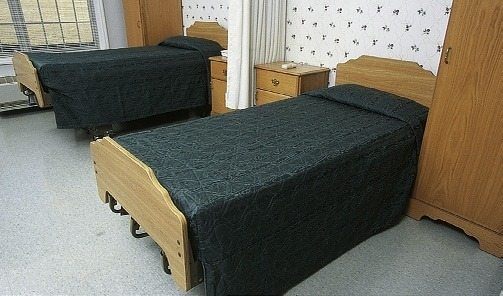
Hospital beds have electrical or manual controls and can be raised horizontally to give care, reducing worker bending and reaching. The lowest horizontal position lets the client get out of bed with ease (FIGURE 21.6) and is also necessary as a safety measure for the client. The head of the bed can be kept flat or raised to varying degrees for the client’s comfort.
医用病床配备有电动或手动控制系统，可实现水平整体升降，以便照护者在实施护理时减少弯腰和前伸幅度。病床降至最低水平位置既能让案主轻松下床，也是预防坠床损伤的核心安全举措。床头可以保持水平平放，也可以抬高到不同角度以提升案主的舒适度。
Most hospital beds are electrically controlled. Controls are on a side panel, on the bed rail, or on a panel at the foot of the bed (FIGURE 21.7), and clients are taught how to safely use the controls. Clients are advised of the risks associated with having the bed in the high position. They are also advised of any position limitations or restrictions.
现代大多数医用病床均采用电动控制。控制面板通常位于床侧挂板、床栏内侧或床尾控制屏上（图 21.7），案主在入院时会被告知如何安全操作这些按钮。医护人员还会告知案主将床置于高位可能引发的坠床风险，以及其病情所限制的特殊体位禁忌。
Most electrically controlled beds can be “locked” into any position to prevent the client from raising or lowering the head or foot of the bed. Clients restricted to certain positions—for example, clients with dementia—may need to have their beds locked. You must also be alert to potential dangers when children, confused clients, or clients with impaired cognition or altered levels of consciousness have easy access to the controls. Follow the care plan, and check with your supervisor.
多数电动病床均具有“位置锁定”（lockout）功能，以防止案主自行升降床头或床尾。对于受医学体位限制或患有认知症（失智症）的案主，可能需要将病床锁定在特定安全体位。当儿童、神志模糊、认知受损或意识水平改变的案主能够触及控制器时，支持工作者必须对潜在危险保持高度警惕。务必遵循照护计划并向主管护士请示核对。
Manually operated beds are also still in use in some facilities and homes. These beds have cranks at the foot of the bed (FIGURE 21.8)—the left crank raises or lowers the head of the bed; the right crank adjusts the knee portion; and the centre crank raises or lowers the entire bed. The cranks are pulled out and up for use, and after use they should be pushed in and turned down. Cranks in the “up” position are safety hazards, as anyone walking past could bump into them.
在部分养老机构和家庭中，手动摇杆病床仍在沿用。这类病床在床尾配有手摇摇杆（图 21.8）：左侧摇杆用于升降床头；右侧摇杆用于调节膝部曲度；中间摇杆用于升降整张病床的高度。摇杆使用时向外拉出并向上扳起，摇动完毕后必须立即推入并向下折叠收起。处于伸出状态的摇杆是重大安全隐患，过往人员极易被其绊倒或碰撞受伤。
Hospital beds should always be left in their lowest position for the safety of the client. Raise the bed only immediately before giving care and when making the bed. As soon as you have finished, return the bed to its lowest position. Never leave the client alone when the bed is raised.
为了案主的人身安全，病床在平时必须始终保持在最低水平位置。只有在即将实施照护操作及铺床的瞬间才将病床升至适宜工作高度。操作一旦结束，必须立刻将床降回最低位。当病床处于抬高位置时，绝对不能将案主单独留在房间内！
Hospital bed legs have wheels that let the bed move easily. Some beds have wheels that can be locked to prevent the bed from moving (FIGURE 21.9). Other beds have different locking mechanisms. Make sure bed wheels are locked at all times unless you are moving the bed to another location. Ensure that bed rails are up if moving a client in the bed within your facility. You or the client could be injured if the bed moves during any care or transfer.
病床床腿安装有万向脚轮以便推动移动。脚轮均配备有刹车锁止装置（图 21.9），部分床采用中控刹车踏板。除非正在将床推往其他地点，否则病床脚轮必须始终处于锁定（刹车制动）状态！若在机构内推床转运卧床案主，必须确保两侧床栏全部升起锁好。若在护理或转移案主过程中病床意外滑动，案主或工作人员都可能遭受严重意外伤害。
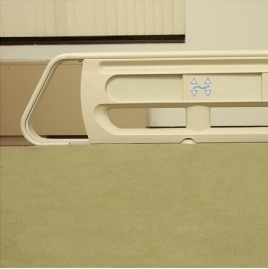
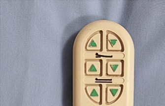
There are several basic bed positions: the flat position, Fowler’s positions (low, semi-, and high Fowler’s), the Trendelenburg position, and the reverse Trendelenburg position.
临床上有数种常用的基本病床体位：平卧位（flat）、福氏卧位（分为低福氏位、半福氏位与高福氏位）、特伦德伦伯格卧位（头低脚高位）以及反特伦德伦伯格卧位（头高脚低位）。
The usual sleeping position. The flat position is also used after a spinal cord injury or surgery for cervical traction and to deliver care (FIGURE 21.10).
这是日常睡眠的最常用体位。平卧位也用于脊髓损伤后、颈椎牵引治疗期间以及照护人员进行床旁护理操作（如翻身、擦浴、更换床单）时（图 21.10）。
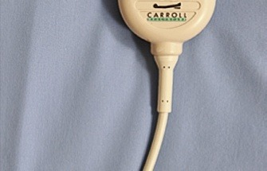
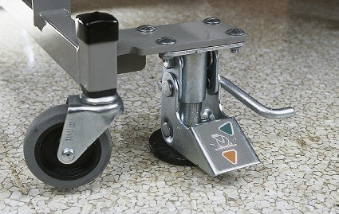
A semi-sitting position in bed. The head of the bed is elevated by 15 to 30 degrees, or the client is propped up with a backrest or pillow (FIGURE 21.11).
床上的一种微仰半坐卧位。床头抬高 15 到 30 度，或在普通床上使用靠背架、枕头将案主上半身垫起（图 21.11）。
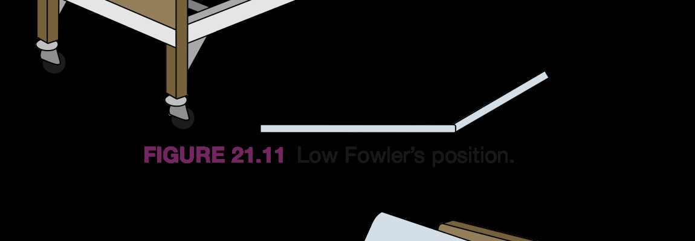
A semi-sitting position in bed. The head of the bed is raised by 30 to 45 degrees (FIGURE 21.12). The client can also be propped up with a backrest or pillows. The foot of the bed may be raised at the knee so that the client does not slide down in bed. However, raising the knee portion can interfere with leg circulation. Check with the care plan and your supervisor before positioning a client in the semi-Fowler’s position (see the Focus on Home Care: Low Fowler’s and Semi-Fowler’s Positions box).
床上的标准半坐卧位。床头抬高 30 到 45 度（图 21.12）。案主也可以用靠垫支托身体。床尾膝部可轻度屈曲抬起，以防止案主向床尾下滑。然而，抬高床膝部会压迫胭窝血管，阻碍下肢静脉血液回流！在将案主置于半福氏位前，务必核对护理计划并向主管请示（详见“居家照护聚焦：低福氏与半福氏位”专栏）。
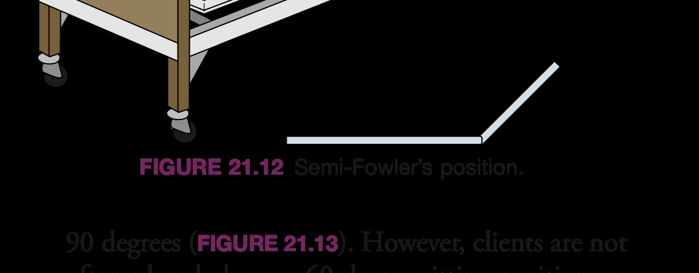
A semi-sitting position in bed. The head of the bed is elevated by 45 to 90 degrees (FIGURE 21.13). However, clients are not often placed above a 60-degree sitting position, as they are too uncomfortable at that angle. Clients who must eat while in bed are placed in a high Fowler’s position to reduce the risk for choking and aspiration. Once the meal is finished, the client can then be returned to the semi-Fowler’s position.
床上的直立坐式卧位。床头抬高 45 到 90 度（图 21.13）。然而，临床上极少让案主保持超过 60 度的角度，因为过于陡峭的坐姿极易导致身体向前倾倒且极不舒服。必须在床上进食的案主务必置于高福氏位，以最大限度降低呛咳与食物误吸（aspiration）的风险。进餐完毕并休息片刻后，方可将案主恢复至半福氏位。
The head of the bed is lowered, and the foot of the bed is raised (FIGURE 21.14). Blocks are placed under the legs at the foot of the bed, or the entire bed frame is tilted. This position requires a physician’s order and is used for postural drainage.
床头倾斜降低，而床尾整体抬高（图 21.14）。在普通床上可通过在床脚下垫木块垫高，或在医用病床上直接倾斜整个床架。此体位属于严格医疗处方操作，必须遵医生医嘱执行，临床上常用于支气管体位引流排痰（postural drainage）。
The opposite of the Trendelenburg position. The head of the bed is raised, and the foot of the bed is lowered (FIGURE 21.15). Blocks are put under the legs at the head of the bed, or the entire bed frame is tilted. This position requires a physician’s order and is used to promote gastric emptying.
与特氏卧位恰好相反的体位。床头整体抬高，而床尾整体降低（图 21.15）。在普通床头腿下垫木块或使电动床架整体倾斜。此体位同样必须有医生医嘱，临床上常用于促进胃排空、防止胃食管严重反流或特定脑部减压。
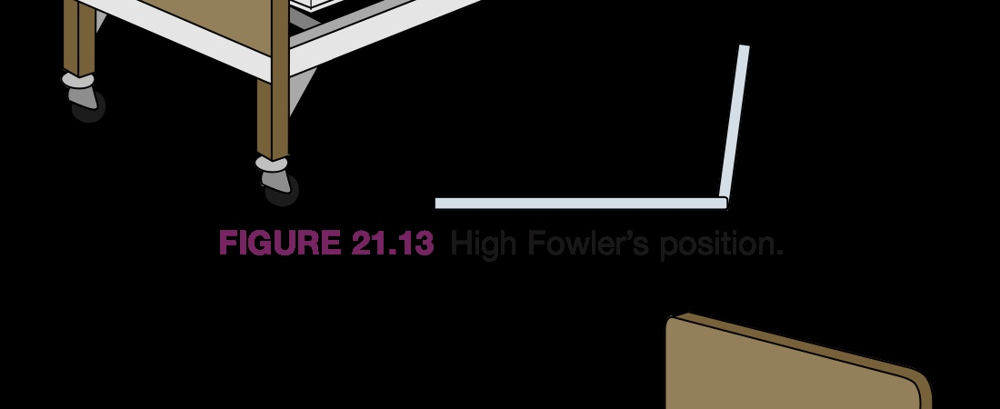
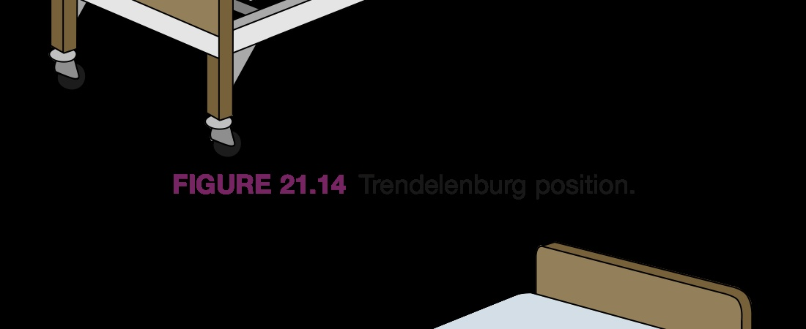
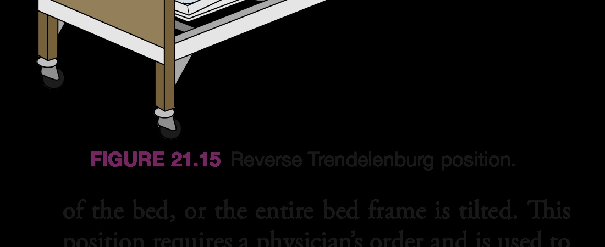
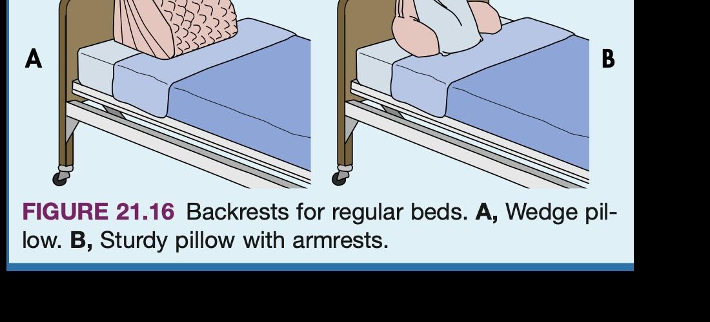
Low Fowler’s and semi-Fowler’s positions can be achieved with regular beds in the community by using a combination of backrests and pillows (FIGURE 21.16). Check the headboard to make sure it is sturdy, as it needs to provide support when the client leans against it. Large, sturdy sofa pillows are useful if a backrest is not available.
在社区居家照料中，针对不能调节角度的普通床铺，可通过组合使用专业靠背架与枕头来实现低福氏位与半福氏位（图 21.16）。务必检查床头板是否足够坚固牢靠，因为当案主后仰倚靠时它需要承受相当大的身体重力。若家中没有专用靠背支架，大型且结实挺括的沙发靠枕也是非常实用的替代辅具。
How often linen is changed varies among work settings (TABLE 21.1, page 465). Follow the care plan and your employer’s policy. For example, in most long-term care facilities, linen changes are routinely done on days the client is showered or bathed. In all settings, linen is changed when it is wet, damp, or soiled.
不同照护环境对于床单被服的更换频次有着不同规定（详见第 465 页表 21.1）。严格遵循护理计划及雇主政策执行。例如在多数长期照护机构中，床品更换通常安排在案主淋浴或盆浴的日子按部就班进行。在任何照护环境中，床单一旦潮湿、发潮或被污染，必须立刻更换！
When handling linen and making beds, follow the rules of Standard Practices. Perform hand hygiene before collecting clean linen. Your uniform is considered dirty, so you must always hold linen away from your body and uniform (FIGURE 21.17). Never shake linen in the air, as doing so could spread microbes. Clean linen should be placed on a clean surface. Never put clean or soiled linen on the floor. If clean linen accidentally touches the floor, put it in the laundry. If you are changing the linens in a semi-private room or a room with four beds, remember that linens for one client should be placed only on that client’s furniture, not on another client’s furniture.
拿取被服与铺床时，必须无条件遵循标准预防操作规程。取用洁净床单前必须严格执行手卫生。照护人员的工作服在院感控制中被视为“污染源”，因此抱拿床单时必须始终远离自己的身体与工作服（图 21.17）！绝不可在空气中抖动床单，抖动会形成气流将附着的皮屑、微粒与病原微生物散播至整个房间。洁净床单必须放置在洁净表面上。严禁将任何洁净或换下的被服扔在地板上！洁净被服一旦不慎接触地面，必须直接丢入污衣袋送洗。在双人间或四人间更换床单时，专属于某位案主的被服只能放置在其个人的家具上，绝不可暂放在邻床案主的桌椅上。
In order to reduce unnecessary time and steps, as well as to prevent cross-contamination of germs from one client’s room to another (see Chapter 19), you need to plan your steps. Take only the linens you will need into the room. If you find you have taken extra linens into the room, do not place them back in the linen room or on the linen cart—leave them in the client’s room. The linens can then be used the next time linens are changed.
为了减少无效往返折返并切断房间之间的病菌交叉污染（见第 19 章），铺床前必须做好流程规划。只将当前房间所需数量的床单带入室内。如果发现自己多带了洁净床单进房，绝不可将其重新放回被服库房或公共被服推车上（因其已暴露于该房间空气中被视作潜在污染）——应将其留在该案主房内的专用洁净柜中，留待下次更换时使用。
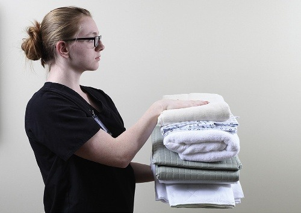
| 照护环境 (Setting) | 常规更换频次 (How Often) | 特殊照护考量与原则 (Special Considerations) |
|---|---|---|
| 居家照护 (Home Care) |
• 通常每周一次。 • 任何时候一旦潮湿、发潮或被污染立即更换。 |
遵循案主对床单材质与款式的个人偏好。例如部分案主习惯盖多条毛毯，部分案主不喜盖毛毯。严格遵循并持续更新案主的照护计划。 |
| 长期照护机构 (Long-Term Care) |
• 通常每周全面更换一次。 • 枕套、上单与底层单可每周更换两次。 • 一旦潮湿、弄脏立即更换。 |
部分案主会从家中携带自己喜爱的床罩、枕头、毛毯或棉被，铺床时应予使用并爱惜保管，确保标注案主姓名。机构若使用彩色床单，允许案主自选颜色、厚薄及铺床时间。 |
| 急性期医院 (Hospitals) |
• 根据医院规章政策而定。 • 案主出院（discharged）时彻底终末更换与床单位消毒。 • 任何时候变湿、弄脏立即更换。 |
同一案主住院期间，若床褥垫、毛毯和床罩未受潮且无严重皱褶，通常予以重复整理使用，仅定期更换贴身床单与枕套。 |
Collect required linen in the reverse order you will use it:
按照与实际铺床使用顺序完全相反的倒序依次提取并叠放床品：
Use one arm to hold the linens and the other hand to pick them up. Make sure the item you will use first is at the top of your stack. For example, if you picked up the mattress pad first, it is at the bottom. The pillowcase is then at the top. Since you need the mattress pad first, place your arm over the pillowcase; then turn the stack over onto the arm with the pillowcase (FIGURE 21.18). The arm that held the linens is now free.
用一只手臂托住已取出的被服，另一只手拿取下一件。确保最先要用的物品处于整叠床单的最顶端。例如，如果您按常规先拿了床褥垫，它就在最底下，而最后拿的枕套在最上面；此时，只需将空闲的手臂平放在枕套上，然后将整叠被服顺势翻转倒扣过来（图 21.18），最先要用的床褥垫瞬间变为顶层，操作一气呵成！
Follow Standard Practices when removing used linen. Used linen is considered dirty (contaminated with microbes). Wear gloves when handling linen soiled with blood, body fluids, secretions, or excretions. Some facilities require that gloves be worn for all bed-making activities to reduce the risk of cross-contamination. Also, check the linen for misplaced personal belongings—dentures, hearing aids, eyeglasses, watches, or jewellery—that clients may leave in their beds. Watch for stray needles in the linen, especially when clients self-medicate.
拆卸换下旧床单时必须严格遵循标准预防。用过的旧床单被视作被微生物污染的脏污织物。接触沾染血液、体液、排泄物或分泌物的被服时必须戴手套。部分机构出于院感防范要求在所有铺床过程中均须佩戴手套。此外，拆床单前必须仔细摸索检查床铺，防止包裹遗失案主的贵重个人物品——如活动假牙、助听器、眼镜、手表或首饰！同时要格外警惕床单中是否夹杂有散落的注射针头，尤其是在案主有自行注射胰岛素等用药习惯时，防止发生职业针刺伤！
Remove each piece of linen separately. Roll the linen away from you. The side that touched the client is then inside the roll. The side that has not touched the client is outside (FIGURE 21.19).
拆卸床单时应逐层分别取下。朝远离自己身体的方向向内卷叠被服。这样，直接接触案主身体的污染面就被包裹卷在内侧，而未直接接触人体的相对洁净面朝外（图 21.19），从而最大程度避免皮屑和病菌外逸。
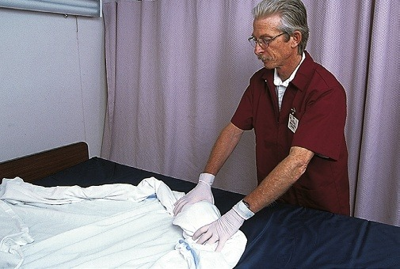
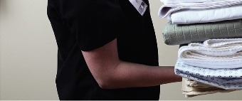
Immediately place used linen in a laundry container or a special linen bag. Remove the bag from the client’s room. Never place soiled linen on the floor, as it contributes to the spread of pathogens. Follow employer policy regarding soiled linen (see Chapters 17 and 19). If the client is on cytotoxic medications (chemotherapy), see Chapter 44 for safety information regarding special handling of soiled linens.
换下的旧床单必须立即放入专用污衣收集桶或防渗被服袋中，并及时将袋子移出案主房间。绝不可将换下的脏床单随手扔在地板上，这种不良习惯是导致地面病原体交叉播散的主要源头。严格遵循机构污衣处置政策（见第 17、19 章）。若案主正在接受细胞毒性化疗药物治疗（chemotherapy），其排泄物污染的被服处置具有特殊双层防化规程，详见第 44 章。
A turning pad (or turning sheet) is a small pad placed over the middle of the bottom sheet. It is used to turn and move the client in bed (see FIGURE 21.25 on page 471). If the client’s care plan calls for an incontinence pad to protect the bed, some agencies and facilities use washable incontinence pads as turning pads (see Focus on Home Care: Incontinence Pads); however, you must follow your agency’s policy for this. Turning pads prevent pain, skin damage, and bone and joint damage by protecting the client’s skin from friction and shearing when the client is moved in bed. A turning pad is also known as a sliding pad or transfer sheet in some facilities. In some settings where turning pads are unavailable—and only if necessary for brief use—flat sheets are folded into the size of a turning pad and used as a turning pad. However, the folded flat sheet should never be left under the client, as the increased bulk of the folded sheet can cause pressure areas under the client. The flat top sheet should be mitred in the corners. A mitred corner is a type of fold done to the top layers of bedding which keeps the layers neat and in place (see FIGURE 21.23 on page 469).
翻身中单（turning pad / turning sheet）是铺设在底层大单中央的一块小面积坚韧织物垫，专用于在床上协助案主翻身与移位（见第 471 页图 21.25）。若护理计划要求使用失禁垫，部分机构允许使用结实可机洗的吸水护理垫兼作翻身垫；但必须严格遵循雇主制度。翻身垫能够有效消除移动案主时产生的摩擦力与剪切力，从而预防皮肤撕脱破损与骨骼关节疼痛。部分机构亦称其为滑行垫（sliding pad）或转移中单（transfer sheet）。在缺乏专用翻身垫的简陋环境中，有时可将普通平单折叠后临时充当翻身垫，但折叠大单绝对不可长期留置在案主身下，因为多层织物堆叠形成的隆起硬块极易在受压处形成局部高压并引发褥疮。此外，上层床单角部需制作规整折角。斜角折叠法（mitred corner）是一种将床单边缘以45度信封角塞入床垫下的技巧，可使床品极其服帖整齐、不易脱落（见第 469 页图 21.23）。
In most facilities throughout the country, no-lift policies exist for the safety of the client and the health care worker. For this reason, turning pads are never referred to as lift pads in these facilities. If your employer has a no-lift policy, you should never attempt moving or lifting the client without checking first with your supervisor.
在全加拿大绝大多数医疗与长期照护机构中，均全面推行“零徒手搬运政策”（No-Lift Policies）以保护案主与医护人员的人身安全。正因如此，在这些机构中，翻身垫绝不可被称为“起吊垫/抬人垫”（lift pads），其功能仅限于在床面上借助滑行动作翻身或调整位置。若您的单位实施零徒手搬运政策，未经主管评估并使用机械升降设备前，严禁徒手悬空抬举案主！
Medical supply stores sell disposable or washable waterproof pads which are used as incontinence pads. Disposable waterproof pads should never be used as a turning pad as they will tear if used for this purpose. If permitted at your agency, washable incontinence pads can be used for turning most clients because they are usually strong and large enough.
医疗辅具商店销售一次性或可反复清洗的防水护理垫。一次性防水垫（disposable pads）绝对不可充当翻身中单使用，因为其材质受力极易撕裂，会导致案主坠落受伤！若机构规程允许，大型且厚实耐拉的可清洗失禁垫因抗拉强度高，可安全用于多数案主的床面翻身。
The case manager will discuss the need for these items with the client and family. Some clients place plastic mattress protectors on their beds, but these protectors do not protect the bottom linens (bottom sheet and mattress pad). Never use plastic garbage bags or dry-cleaning bags, as these are not strong enough to protect the linens and mattress. As well, they slide easily and can move out of place, and the danger of suffocation is great if the client’s movements result in the bag covering the client’s nose and mouth. Again, your supervisor and the care plan will tell you what is safe to use for the client.
个案经理会与案主及其家属协商这些防护用品的配置。部分案主会在床垫上罩塑料保护套，但这并不能保护上层的底层单与床褥垫。严禁使用塑料垃圾袋或干洗塑料包装袋来充当床垫防水垫！这些塑料薄膜极其薄弱易滑脱，不仅无法保护床品，更存在极高的窒息死亡危险——若案主在翻身活动时不慎被塑料薄膜捂住口鼻，极易导致窒息殒命！主管护士与照护计划会明确告知何种用品安全合规。
Cribs, crib linen, mattresses, other linen, and bumper pads all pose many dangers to infants, as they can lead to strangulation and suffocation. Report any safety hazard to your supervisor. Always follow these safety rules:
婴儿床、床品、床垫以及床围防撞软垫对婴儿存在诸多致命隐患，可能直接导致勒颈与窒息。发现任何安全隐患必须立即报告主管。必须严格恪守以下 11 条安全黄金法则：
• The crib mattress must be firm. A soft mattress can cover the baby’s nose and mouth, causing suffocation.
• 床垫必须坚实挺括。过软的床垫会在婴儿面部下陷并封堵口鼻，直接引发窒息。
• The mattress must fit snugly in the crib frame. The baby’s head could get caught between the frame and the loose mattress and cause strangulation.
• 床垫必须严丝合缝嵌合于婴儿床框架中。松动的床垫间隙会导致婴儿头部卡在床架与床垫之间造成颈部扼压窒息。
• The space between the mattress and crib sides should be no more than 3 cm. Only two adult fingers should fit in the space. If more than two fingers fit, the mattress is too small.
• 床垫与床栏边缘的间隙不得超过 3 厘米（≤ 3 cm）。间隙仅能容纳成年人两根手指宽度；若能插入超过两指，表明床垫尺寸过小，严禁使用！
• The mattress must be at least 65 cm (34 in.) lower than the top of the crib rails to protect the baby from falling out of the crib. The mattress should be lowered even more when the baby can stand in the crib.
• 床垫表面距离婴儿床护栏顶端的垂直距离至少应达 65 厘米（26 英寸）。当婴儿学会扶栏站立时，必须将床垫进一步调至最低档位以防翻爬坠床。
• Plastic garbage bags and dry-cleaning bags must not be used to protect the mattress.
• 绝对严禁使用塑料垃圾袋或干洗塑料袋保护床垫。
• Bumper pads are no longer recommended for use in cribs, as they pose a risk for strangulation of the baby.
• 加拿大儿科学会与卫生部已全面禁止使用床围防撞软垫（bumper pads）！防撞垫存在极高的勒颈和堵塞口鼻窒息风险。
• Do not tuck blankets and top sheets under the mattress, as the baby can get caught in them.
• 不要将婴儿毛毯和上单紧塞在床垫下方，婴儿蹬动时易被紧绷的被角缠绕卷入。
• Do not place pillows, fluffy comforters, stuffed toys, or heavy blankets in the crib when the baby is in it, as these items can cause suffocation.
• 婴儿在床内时，床内严禁堆放枕头、蓬松厚被、毛绒玩具或沉重毛毯！这些物品是引发婴儿猝死综合征（SIDS）与窒息的主要杀手。
• Check linens for loose threads or stitching, and trim any found, as loose stitching can cause strangulation.
• 经常检查床单有无脱线或开线线头并及时剪除，脱落的细线易缠绕婴儿手指、脚趾造成缺血坏死或缠绕颈部。
• The space between the side bars should be no more than 6 cm.
• 婴儿床栅栏立柱之间的空隙不得超过 6 厘米（≤ 6 cm），防止婴儿身体滑出而头部被卡在栅栏间。
• Cribs manufactured before 1986 do not meet safety regulations and must not be used.
• 1986 年以前生产的老旧婴儿床不符合国家强制安全规约，必须严禁使用！
Your job as a support worker will include making beds. No matter what type of bed you make, safety, proper body mechanics, and medical asepsis are important. Follow Standard Practices. BOX 21.1 lists the guidelines for bed making (also see the Focus on Children: Crib Safety box).
作为支持工作者，铺床是日常护理工作的基石。无论铺设何种类型的病床，安全防范、正确身体力学与医学无菌原则始终至关重要。必须严守标准预防。详见第 472 页 BOX 21.1“铺床操作全局指引”。
A closed bed is made when the bed is expected to be unoccupied for several hours or days. The top linen is pulled up, and the bedspread is neatly pulled over the pillow. In some facilities, the pillow is placed on top of the bedspread (FIGURE 21.20). A closed bed is usually made when the client is up for most or all of the day. Clean linen is used as needed.
闭式床（备用床）是在病床预计有数小时乃至数天无人占用时铺设的。上层被服完全向上拉起平整铺盖，床罩整齐地覆盖在枕头上方；在某些机构中，枕头亦可平放在床罩顶端（图 21.20）。当案主全天绝大部分时间离床活动时，通常铺设闭式床以保持被褥洁净防尘。根据需要换用洁净被服。
In facilities, after a client is discharged, the bed frame and mattress are cleaned and disinfected. A closed bed is then made and kept ready for a new client.
在医疗照护机构中，案主出院（discharged）后，整个床架与床垫均须接受彻底的擦拭清洁与终末消毒。随后铺好整洁的闭式床，随时迎接新入住案主。
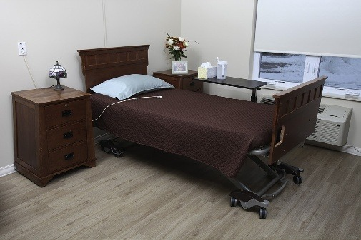
1. Perform hand hygiene.
1. 严格执行手卫生（流动水洗手或速干手消毒剂）。
2. Collect the following supplies: Clean linen, mattress pad (if used), bottom sheet (flat or fitted sheet), incontinence or turning pad (if used), top sheet, blanket or comforter (if used), bedspread (if used), two pillowcases (or one, per facility policy), gloves, laundry bag (follow employer policy for disposal of dirty linens).
2. 按照倒序集齐以下用物：洁净被服一套、床褥保护垫、底层床单（平单或床笠）、吸水失禁垫/翻身中单、上层盖被大单、毛毯或被芯、床罩、枕套（1～2个）、医用手套、污衣收集袋。
3. Place linen on a clean surface (bedside chair or overbed table).
3. 将收集好的整叠床品平稳放置在洁净表面上（床旁椅面或经过擦拭消毒的跨床桌上，严禁放地面）。
4. Provide for privacy.
4. 妥善拉好围帘或关闭房门以确保环境私密。
5. Remove the call bell from the bed.
5. 从床头或床栏上取下呼叫铃按钮并安全放置，防撞击损坏。
6. Raise the bed to a comfortable working height. Ensure the bed is in a flat position.
6. 将病床水平整体升至舒适的工作高度（约与照护人员髋关节水平），确保床面调节至完全平卧位。
7. Lower the bed rail on the side where you will work.
7. 放下您当前准备操作一侧的床栏。
8. Remove soiled linen from the bed: Remove pillowcases and place pillows on clean chair. Loosen all bedding. Remove each piece of linen separately, rolling it away from you with the soiled side inside. Place directly into the laundry bag. Never put dirty linen on the floor.
8. 拆除旧被服：取下枕套，将枕芯放置在洁净椅上；将四周塞紧的被服逐一松脱；逐层分别取下床品，朝远离身体方向向内卷叠使污染面包在内部，直接投入污衣袋中。严禁触碰制服，严禁扔在地面！
9. Clean and disinfect the bed frame and mattress if required by facility policy. Remove gloves if worn, and perform hand hygiene.
9. 根据机构要求对床架与床垫进行彻底擦拭消毒；若戴有手套，此时脱除手套并严格执行手卫生。
10. Move the mattress to the head of the bed. This ensures comfort and safety for your client.
10. 将床垫向上推移紧贴床头板。这能够确保床垫稳固不滑移，保障案主的舒适与安全。
11. Put the mattress pad (if used) on the mattress. Make sure the pad is even with the top of the mattress. The pad provides comfort to your client.
11. 将保护床褥垫铺在床垫上（若使用）。确保床褥垫顶端与床垫上边缘完全齐平。床褥垫为案主提供柔软承托与舒适感。
12. Place the bottom sheet on the mattress pad:
a. Unfold it lengthwise.
b. Place the centre crease in the middle of the bed (FIGURE 21.21) with the large hem at the top and the small hem at the bottom and the hem stitching facing downward. If using a fitted sheet (one tailored to fit the mattress—usually with elasticized corners), place the top of the sheet over the mattress on your side of the bed. Ensuring the hem stitching faces downward helps reduce irritation of your client’s skin.
c. Position the lower edge of the sheet so that it is even with the bottom of the mattress. If using a fitted sheet, pull the sheet over the bottom corner.
12. 将底层床单铺在床褥垫上：
a. 沿纵向顺势展开床单。
b. 将床单的中线折痕精准对齐病床的中线轴（图 21.21），较宽的褶边置于床头，较窄的褶边置于床尾，确保卷边缝线朝下贴紧床垫。若使用定型床笠（四角带松紧带的床单），将床笠上方套入您这一侧的床垫角。缝线朝下可防止粗糙线迹摩擦刺激案主娇嫩皮肤。
c. 使床单下边缘与床垫底边平齐。若使用床笠，将下方床单角套牢在床垫底角。
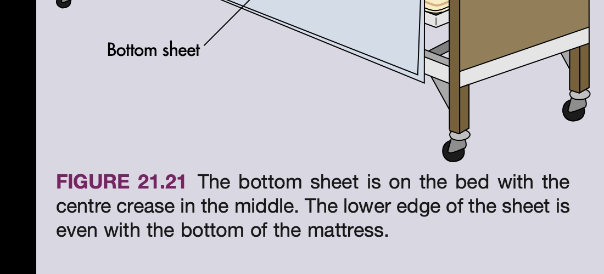
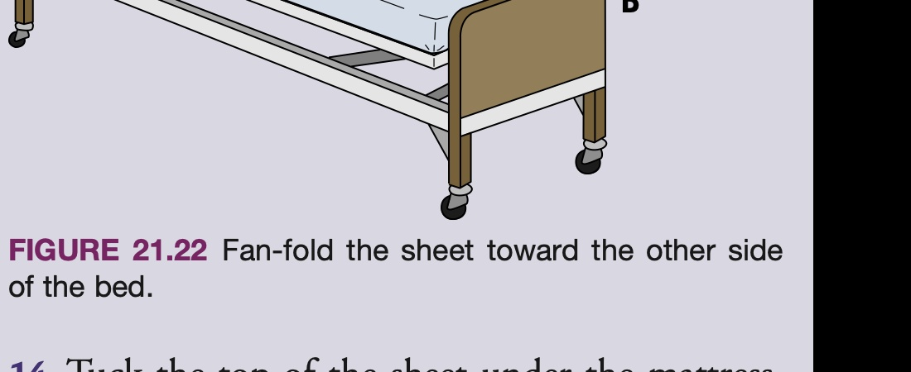
13. Open the sheet. Fan-fold it toward the other side of the bed (FIGURE 21.22).
13. 展开您这一侧的床单，将另一半呈扇形叠向病床对侧（图 21.22），便于稍后在对侧拉展。
14. Tuck the top of the sheet under the top end of the mattress. Ensure that it is smooth.
14. 将床头多余的床单平整塞入床垫顶端下方，确保无任何褶皱。
15. Make a mitred corner at the top (head) of the bed (FIGURE 21.23):
a. Tuck the sheet under the top end of the mattress.
b. Grasp the edge of the sheet about 45 to 50 cm (18 to 20 in.) from the corner of the mattress. Raise the edge of the sheet and lay it on top of the mattress to form a triangular fold.
c. Tuck the lower portion of the sheet under the side of the mattress.
d. Bring the triangular fold down over the side of the mattress and tuck it smoothly under the mattress.
15. 在床头制作标准的信封折角（斜角折叠，图 21.23）：
a. 先将床头一端的床单牢牢塞入床垫下方。
b. 在距离床垫拐角约 45 至 50 厘米（18 至 20 英寸）处用手提起侧边床单，向上拉起平铺在床垫上，形成一个规整的 45 度三角形折褶。
c. 将床垫侧下方悬垂的下部床单平整塞入床垫侧面。
d. 将上方三角形折褶顺势翻下覆盖床垫边缘，并紧紧平塞入床垫下方。
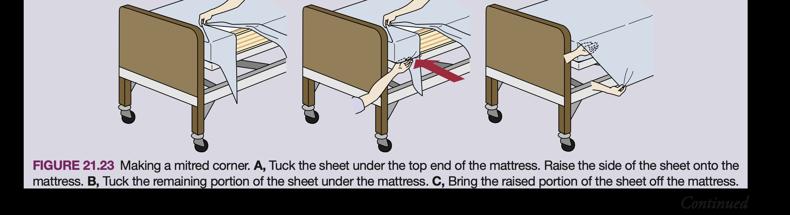
16. Pull the bottom sheet tight so that there are no wrinkles (FIGURE 21.24). This helps reduce irritation of your client’s skin.
16. 用双手沿床边用力将底层大单向下、向外拉平拉紧，确保床面宛如鼓面般平整无一丝皱褶（图 21.24）。极其平整的底层是预防案主皮肤摩擦与压疮破损的关键防线！
17. Place an incontinence pad or turning pad (if used) in the centre of the bottom sheet (FIGURE 21.25) (see Chapter 14). These can be used to keep the bottom sheet clean or to make turning the client easier. Fan-fold the other half to the other side of the bed.
17. 将吸水防渗护理垫或翻身中单铺在底层大单正中央（图 21.25，见第 14 章）。该垫子用于保护底层床单免受体液浸渍，并便于日常翻身移位。将多余的另一半扇形折叠推向病床对侧。
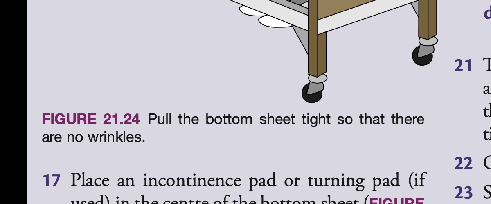
18. Put the top sheet on the bed:
a. Unfold it lengthwise.
b. Place the centre crease in the middle.
c. Place the wide hem even with the top of the mattress, with the hem stitching outward (facing away from the bed).
d. Open the sheet, and fan-fold it to the other side.
18. 铺设上层盖被大单：
a. 沿纵向展开大单。
b. 将中线折痕对准病床中轴线。
c. 使大单顶端的宽边与床垫顶边齐平，卷边粗糙缝线朝外（朝上），稍后翻折被口时光滑面紧贴案主皮肤。
d. 展开大单，并将另一半扇形推向床对侧。
19. Place the blanket (if used) on the bed:
a. Unfold it so that the centre crease is in the middle.
b. Put the upper hem about 15 to 20 cm (6 to 8 in.) from the top of the mattress, with the hem stitching facing downward.
c. Open the blanket. Fan-fold it to the other side.
19. 铺设保暖毛毯（若使用）：
a. 展开毛毯，使中线对准床中线。
b. 将毛毯上边缘放置在距离床垫顶端约 15 至 20 厘米（6 至 8 英寸）处（留出被口翻折空间），缝线朝下。
c. 展开您这一侧毛毯，将另一半扇形折向对侧。
20. Place the bedspread (if used) on the bed:
a. Unfold it so that the centre crease is in the middle.
b. Place the upper hem even with the top of the mattress.
c. Open the bedspread. Fan-fold it to the other side.
20. 铺设最外层床罩（若使用）：
a. 展开床罩，中线居中对齐。
b. 将床罩顶边缘与床垫顶边齐平。
c. 展开这一侧，将另一半扇形推向对侧。
21. Tuck the top sheet, blanket, and bedspread together under the foot of the mattress.
21. 将床尾处多余的上单、毛毯与床罩三层被服一起平整塞入床垫底端下方。
22. Make a mitred corner at the foot of the bed with all top bedding together. Allow the sides of the bedding to hang loosely over the bed.
22. 将上单、毛毯与床罩在床尾拐角处制作一个整齐的联合斜角折叠（信封角），随后让床侧被服自然下垂。
23. Move to the other side of the bed. Raise the bed rail on the made side if required.
23. 绕行至病床对侧继续操作。若有安全需要，先升起已铺好一侧的床栏。
24. Pull the bottom sheet, pad, and linens tightly toward you. Straighten and smooth the mattress pad. Pull the bottom sheet tight to eliminate all wrinkles. Make a mitred corner at the head of the bed.
24. 将扇形折叠的底层大单与中单用力向下拉平拉展。理平床褥垫，拉紧底层单使其毫无皱痕，并在对侧床头制作规整信封角并紧塞床边。
25. Straighten and smooth top sheet, blanket, and bedspread. Tuck them under the foot of the mattress and make a mitred corner.
25. 逐层拉直整平对侧的上单、毛毯与床罩，将床尾多余织物塞入床垫下方并制作整齐信封角。
26. Turn the top hem of the bedspread under the top hem of the blanket to make a cuff (FIGURE 21.26). Turn the top sheet down over the spread. The hem stitching should be facing down. If the bedspread is to cover the pillow, tuck the spread under the pillow at the pillow’s bottom.
26. 将床罩顶边向下反折塞入毛毯顶边下方形成规整封边（图 21.26）。接着将上单顶端向下拉下反折覆盖在床罩上方（反折后光滑面朝外，缝线朝下贴紧床品）。若机构要求用床罩完全覆盖枕头，将床罩向上拉平并在枕头下方塞入折边。
27. Place the pillow on the bed.
27. 将枕头平稳放置在病床上准备套枕套。
28. Open the pillowcase so that it is flat on the bed.
28. 将枕套口完全打开，使其平铺在床面上（切忌像穿裤子一样用下巴夹住枕头或在空气中狂甩枕头，此为院感违规！）。
29. Put the pillow in the pillowcase (FIGURE 21.27). Grasp the corners of the pillow to form a “V”. Guide the pillow into the pillowcase. Fold the pillowcase edges under together, and tuck them in next to the pillow. This prevents the pillow from slipping out.
29. 规范套入枕套（图 21.27）：用手捏住枕芯顶端两角使其聚拢呈“V”字形，用另一手扶住枕套口顺势将枕芯滑入枕套底角，松手使两角完全舒展落入枕套死角内。将枕套开口处多余的布料向内翻折整齐塞在枕芯旁，防止枕芯外露滑脱。
30. Place the pillow on the bed. The open, tucked end should be away from the door and the seam of the pillowcase toward the head of the bed.
30. 摆放枕头：将枕头平整安放在床头中央。枕套开口折口处必须背向房门方向（背门朝向），枕套顶端缝线朝向床头板！背向房门可使整个居室在门外望去视觉极其整洁利落，且防飞沫落入开口内。
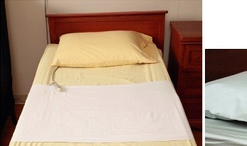
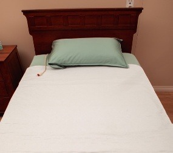
31. Attach the call bell to the bed.* This provides an easy, safe way for the client to contact staff, if necessary.
31. 将呼叫铃夹固定在病床床头或伸手可及的安全护栏上。*这为案主提供了随时便捷呼叫工作人员求助的生命生命线。
32. Lower the bed to its lowest position. Lock the bed wheels.*
32. 将病床整体降至最低水平位置！踏下踩板彻底锁定病床脚轮刹车。*（核心防跌倒安全要求！）
33. Follow your employer’s policies as to where you put clean leftover linens in the client’s room.
33. 严格遵循雇主规程，将房内多余的洁净被服妥善存放在案主房内的专属洁净收纳柜中，切忌退回公共推车。
34. Remove the laundry bag from the room (if your facility has laundry bags in clients’ rooms). Follow employer policy for care of dirty linen.
34. 扎紧封好污衣收集袋并立即移出案主居室，送至指定污衣暂存间。严格遵守污染被服无害化洗涤处置规约。
35. Perform hand hygiene.
35. 彻底执行洗手与手消毒（流动水揉搓至少 20 秒）。
*带星号步骤可能不完全适用于所有社区居家照护环境，但呼叫畅通与防滑制动原则始终适用。
• Use good body mechanics at all times.
• 全程时刻运用优良的身体力学：调高床位以防过度弯腰、屈膝屈髋、收紧腹肌、保持双脚宽基底支撑。
• Follow the rules of medical asepsis.
• 严格遵循医学无菌原则：区分清洁区与污染区，洁物远离污物，防止病原体传播。
• Follow Standard Practices.
• 严格执行标准预防规范：预估接触体液排泄物风险，规范穿戴手套与防护用具。
• Make the bed according to the client’s wishes and the care plan. If the client’s wishes are unsafe, tell your supervisor.
• 充分尊重案主的个人喜好并依据照护计划铺床；若案主的要求存在安全风险，耐心解释并向主管汇报。
• Have a bag bin ready for disposal of soiled linen. Follow your employer’s policies.
• 提前备好污衣收集袋或污衣桶，严格按照机构规程处置脏污织物。
• Perform hand hygiene before handling clean linen and after handling dirty linen.
• 接触洁净被服前必须洗手，接触与处置污染被服后必须立刻洗手消毒。
• Bring enough linen to the client’s room. Try not to bring more linen than what is needed.
• 准确预估用量，带入房间的被服务求精准，切忌过多携带导致院感报废或额外损耗。
• Do not use torn linen.
• 严禁使用有破损、撕裂或磨损严重的被服！破损边缘会摩擦娇嫩皮肤，且易勾挂案主手足。
• Never shake linen in the air. Shaking linen spreads microbes, lint, and dust.
• 绝不可在空气中抖动床单被褥！剧烈抖动会将织物上的微生物、棉絮、皮屑与尘埃扬起并扩散至整个空气中。
• Hold linen away from your uniform. Dirty linen as well as clean linen must not touch your uniform.
• 床品抱拿时始终远离制服与身体！洁净床单避免被工作服污染，污染床单避免污染工作服并传播给下一位案主。
• Never put used, soiled linen or clean linen on the floor.
• 绝对严禁将任何洁净被服或用过的脏床单直接放在地板上！
• If the client is on cytotoxic medications (chemotherapy), see Chapter 44 for safety information regarding special handling of soiled linens.
• 若案主正在使用抗肿瘤化疗药物，换下的被服存在化学毒性残留，必须遵照第 44 章专用双层隔离与手套处置规约。
• Linen must be straightened whenever loose or wrinkled and at bedtime.
• 床单一旦松动或起皱必须随时理顺拉平，每晚临睡前必须常规彻底理顺一次。
• Make one side of the bed, as much as possible, before going to the other side. This practice saves time and energy.
• 坚持“分侧铺设完成”原则：在移向对侧前，尽可能先将一侧的所有步骤全部完成，能够极大节省操作时间与体力消耗。
• Change wet, damp, or soiled linen right away to help prevent breakdown of your client’s skin.
• 受潮、发湿或污染的被服必须立刻无条件更换！这是杜绝皮肤浸渍与压疮形成的第一防线。
• Manually operated beds have handles used to position the beds. Ensure that after use, the handles are pushed in and turned down.
• 手动摇杆病床使用完毕后，摇杆把手必须推入并向下折回，防止他人走过时磕碰绊伤。
• Hospital beds have wheels that let the bed move easily. Make sure the bed wheels are locked when giving bed care or transferring your client.
• 实施床旁护理、铺床或转运案主上下床时，病床脚轮必须时刻锁定，严防因床体晃动导致坠跌！
• Clients need to be advised of the risks associated with having the bed in high positions. They are also advised of any position limitations or restrictions.
• 务必告知案主处于高床位时的坠落风险，并明确宣教其病情所限制的特殊体位禁忌。
An open bed is made shortly before the bed is to be occupied. Top linens are folded back so that the client can get into bed easily (FIGURE 21.28). An open bed is made when the client is out of bed only for a short time, or it is made just before the client goes to bed.
开式床（暂空床）是在病床即将被案主占用前不久铺设的。上层被服向后折叠呈扇形堆叠在床尾，使案主能够毫无阻碍地轻松钻入被窝（图 21.28）。当案主仅短时间离开病床（如短时散步、如厕、坐椅），或者在晚间案主即将就寝前，通常将闭式床转换为开式床。
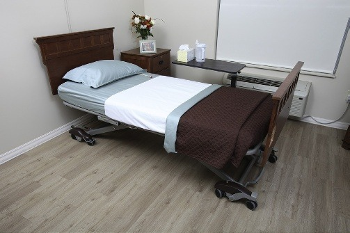
1. Perform hand hygiene.
1. 严格执行手卫生。
2. Collect linens for a closed bed, depending on your employer’s policy.
2. 依据机构规程，按需准备相应洁净床品。
3. Make a closed bed (see Making a Closed Bed, page 468).
3. 先按照第 468 页标准规程铺好一张平整整齐的闭式床。
4. Fan-fold top linens to the foot of the bed (see FIGURE 21.28).
4. 将顶部的盖被、毛毯与床罩从床头一并抓住，向床尾做扇形来回折叠（图 21.28）。
5. Attach the call bell to the bed.* This provides an easy, safe way for the client to contact staff if necessary.
5. 将呼叫铃牢固夹固定在床头或床栏触手可及处。*
6. Lower the bed to its lowest position.* This reduces the risk for client injury or falls.
6. 将病床降至最低水平位置！* 彻底消除因床位过高导致的坠床跌伤风险。
7. Follow your employer’s policy regarding where clean linen is stored in the client’s room.
7. 妥善收纳房内存留的洁净备用床单。
8. Follow employer policy for care of dirty linen.
8. 妥善移出并处置脏污被服。
9. Perform hand hygiene.
9. 规范洗手消毒。
*带星号步骤在私人家庭中视具体条件而定，但降床防摔与呼叫求助保障是全球通用共识。
An occupied bed is made while the client is still in the bed (FIGURE 21.29) because the client cannot get out of bed for reasons of illness or injury. Mechanical lifts may be used to lift the client out of the bed while it is being made. Before you start, you must know about restrictions or limitations in the client’s movement or positioning. Explain each step of the procedure to the client before it is done. Always explain what you are doing even if the client cannot respond to you. Remember to use good body mechanics. The most important thing to remember is to keep all linens free of wrinkles to prevent pressure ulcers.
有人床（occupied bed）是在案主因伤病、极度虚弱完全无法离床的情况下，在案主仍然躺在床上时所进行的床单被服更换与铺设（图 21.29）。部分机构也可能使用机械升降吊椅将案主暂时吊离床铺进行彻底整理。在动手操作前，您必须全面掌握案主身体活动或体位摆放的医疗禁忌与限制。在实施每一步前，务必向案主详细解释正在进行的操作；即使案主处于昏迷或无法用语言回应，也必须全程温柔地向其解释！时刻运用优良的身体力学。最至关重要的核心铁律是：务必确保底层所有床单与垫类绝对平整无褶皱，以彻底消除引发压疮的高危因素！
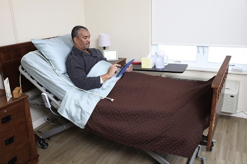
1. Identify the client, according to employer policy. This eliminates the possibility of mistaking one client for another.
1. 严格核对案主身份（核对腕带姓名与出生日期）。杜绝任何差错发生。
2. Assemble the appropriate number of staff to perform this procedure according to the client’s care plan. Explain the procedure to the client. Having the correct number of staff reduces the risk of injury to the client or the staff when making an occupied bed.
2. 根据照护计划召集足够的工作人员协助（重度瘫痪或高体重案主通常需要 2 名人员配合）。向案主解释铺床流程。充足的人力配置能够极大降低案主坠床及工作人员腰背肌肉骨骼拉伤风险。
3. Perform hand hygiene.
3. 规范洗手消毒。
4. Collect the following supplies: Laundry bag (if available), clean linen (see Making a Closed Bed, page 468). By collecting all the necessary equipment beforehand, you will not have to leave your client’s side and can eliminate wasting time and energy in obtaining forgotten equipment.
4. 备齐所有用品：污衣袋、全套洁净床单（按倒序码放）。提前备齐用物可避免操作中途因遗漏物品而擅自离开案主床旁，消除由此导致的案主跌落高危风险。
5. Place linen on a clean surface.
5. 将洁净被服平稳置于洁净台面或椅面上。
6. Provide for privacy.
6. 完全拉好隐私隔帘或关闭房门。
7. Remove the call bell.*
7. 从床旁暂时取下呼叫铃妥善放置。*
8. Place the laundry bag (if available in your facility) near the bed or follow your employer’s policy.
8. 将污衣袋放置在床旁方便取用处（绝不可放地面）。
9. Raise the bed to a comfortable working height. Follow the care plan for positioning restrictions. Ensure that the bed is flat unless the client’s condition does not allow a flat position.
9. 将病床升至适宜的工作高度。核对体位禁忌，将床身调节至完全水平平卧位（除非案主心肺病情绝对禁忌平卧）。
10. Lower the bed rail on the side where you are working. The bed rail on the opposite side MUST remain UP to protect the client from falling.
10. 放下您当前工作一侧的床栏。对侧床栏必须保持升起锁定状态，防止案主翻身时滑落坠床！
11. Loosen all top bedding. Cover the client with a bath blanket or clean top sheet before removing the soiled top sheet. If the blanket or bedspread will be reused, fold it into a square (FIGURE 21.30) and place on a clean chair.
11. 松脱四周塞紧的上层被服。在抽走旧上单前，先将一条保暖擦浴大毯或洁净大单覆盖在案主身上以保暖并维护尊严。若毛毯或床罩需重复使用，将其规整折叠呈方形（图 21.30）放置在洁净椅上。
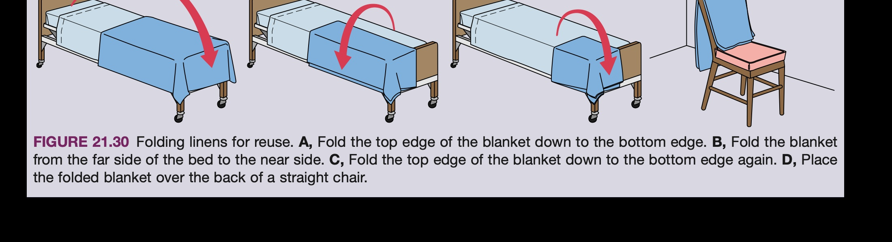
12. Position the pillow under the client’s head for comfort.
12. 调整枕头位置垫于案主头下，保持颈椎自然对齐与舒适。
13. Help the client turn onto their side facing away from you (toward the raised bed rail). Ensure the client is safe and comfortable near the opposite edge of the bed.
13. 协助案主侧卧并面朝对侧升起的安全床栏（背对您）。确保案主身体平稳倚靠，手可扶护栏，绝无坠床隐患。
14. Loosen the bottom linens on your side of the bed (bottom sheet and incontinence/turning pad).
14. 将您这一侧塞在床垫下方的底层大单及翻身垫全部拉出松脱。
15. Fan-fold or roll the dirty bottom linen toward the client’s back (FIGURE 21.31). Tuck it tightly next to the client's back.
15. 将沾有污物的旧底层大单与失禁垫紧贴着向内卷叠或扇形折叠，牢牢塞在案主的后背下方（图 21.31）。污染面卷在内侧，为新单留出洁净床面。
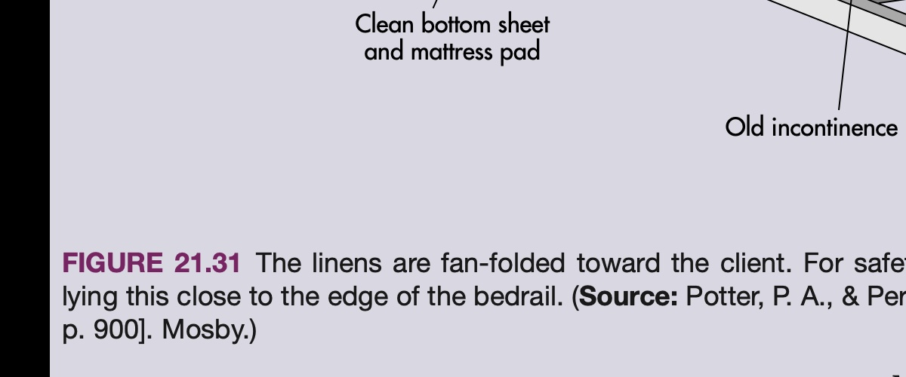
16. Assess the client’s skin on the back, buttocks, sacrum, and heels for any redness, breakdown, or pressure injury. Report any findings promptly.
16. 借侧卧之机，仔细全面评估案主后背、骶尾骨、臀部及足跟处皮肤，查看有无红斑变色、破溃或受压早期征兆。发现异常及时向主管汇报。
17. Wash and dry the client’s back and buttocks if necessary (see complete bed bath procedure in Chapter 17).
17. 若有需要，趁此时机使用温水和温和清洁液轻柔清洗案主臀部与背部皮肤，并用毛巾轻轻蘸干（不可用力擦伤角质层）。
18. Remove and discard gloves if worn for cleansing. Wash hands, apply clean gloves.
18. 皮肤清洁完毕后，脱除受污染手套，洗手消毒，更换洁净手套。
19. Smooth the mattress pad on your side of the bed.
19. 顺势拉平您这一侧暴露出来的床褥保护垫。
20. Place a clean incontinence pad / turning pad over the old linen roll, fan-folding the clean pad tightly next to the client's back.
20. 将洁净的翻身中单对折，多余的一半紧紧扇形叠在案主背部下方，完全遮盖旧单卷。
21. Place the clean bottom sheet on the bed lengthwise, with the centre crease in the middle of the bed.
21. 铺设洁净底层大单：沿纵向展开，中线折痕居中对齐。
22. Fan-fold the remaining clean sheet toward the client, tucking it under the soiled linen roll.
22. 将多余的一半洁净大单做扇形折叠，紧紧塞入旧单卷的下方。
23. Tuck the top of the clean bottom sheet under the mattress at the head of the bed.
23. 将床头多余的洁净床单平整塞入床垫下方。
24. Make a mitred corner at the head of the bed.
24. 在床头制作标准的信封折角。
25. Tuck the bottom sheet under the mattress from head to foot, pulling it tightly so there are NO wrinkles.
25. 从床头至床尾顺势将侧面床单用力拉紧塞入床垫下，确保您这一侧毫无一丝褶皱！
26. Explain to the client that they will roll over a bump (the rolled linen). Assure the client that there is no risk for a fall.
26. 提前温和告知案主将翻身越过中间隆起的床单卷。向案主保证其非常安全，绝对不会跌落。
27. Raise the bed rail on your side. Move to the opposite side of the bed and lower that bed rail. Help the client turn over the linen roll onto their other side (facing you).
27. 先升起您这一侧的床栏并锁牢！随后绕到病床对侧，放下该侧床栏。协助案主翻越中线床单卷，转向侧卧面向您这一侧。
28. Remove the soiled bottom linens (incontinence pad, bottom sheet, mattress pad if soiled) one piece at a time, rolling each away from you into the laundry bag. Never put soiled linens on the floor.
28. 逐层取下暴露出来的旧失禁垫和旧底层大单，向内卷叠使污染面包在内部，直接投入污衣袋。严禁扔在地板上！
29. Remove and discard gloves if worn. Wash your hands.
29. 接触脏床单后立即脱除手套扔入医废桶，彻底洗手消毒。
30. Straighten and smooth the mattress pad.
30. 拉平床褥垫。
31. Pull the fan-folded clean bottom sheet and clean incontinence pad toward you, unrolling them smoothly. Make a mitred corner at the head of the bed. Pull the sheet tightly and tuck under the mattress from head to foot. A smooth, tight foundation reduces the chance of skin irritation and pressure injuries.
31. 用双手抓住卷在案主身下的洁净大单与中单，顺势用力向您这一侧拉展展开。在床头制作整齐信封角，从床头到床尾用力将床单下边缘塞入床垫下方。极其紧绷平整的底层是预防皮肤剪切力与褥疮的最坚固屏障！
32. Pull the incontinence pad / turning pad tightly toward you and smooth it completely.
32. 将翻身中单用力拉平，确保案主身下毫无半点皱褶。
33. Help the client roll onto their back into the centre of the bed. Adjust the pillow comfortably.
33. 协助案主平稳翻回仰卧位，处于病床正中央。重新调整枕头使其完全舒适。
34. Place the clean top sheet over the client. Have the client hold the top sheet, or tuck it under their shoulders, as you remove the bath blanket from underneath.
34. 将洁净盖被大单覆盖在案主身上。请案主用手拉住大单顶端（或轻轻塞在案主肩膀下），自床尾顺势将下方的保温浴毯轻轻抽走。
35. Place the blanket and bedspread over the top sheet, keeping centre creases aligned in the middle.
35. 依次铺上毛毯与床罩，中线居中对齐。
36. Make a cuff at the top by turning the bedspread top edge under the blanket and the top sheet down over the spread.
36. 制作床头封口袖：床罩顶端折入毛毯下，盖被大单顶端翻折覆盖床罩。
37. Make a toe pleat (FIGURE 21.32): Stand at the foot of the bed. Grasp the top linens with your hands and lift them up about 5 to 8 cm (2 to 3 in.) to create extra slack over the client’s toes. You can make either a horizontal toe pleat or a vertical toe pleat. This provides freedom of movement for the feet and prevents pressure on the toes, preventing footdrop and skin breakdown.
37. 制作足部防压折褶（Toe Pleat，图 21.32）：站在床尾处，用双手将案主足部的上层被服向上提起约 5 至 8 厘米（2 至 3 英寸）形成一道宽松的活动褶皱。可制作水平足褶或纵向足褶。此项操作可极大消除厚重被褥压迫足背与足趾，有效预防垂足畸形（footdrop）与足趾压疮！
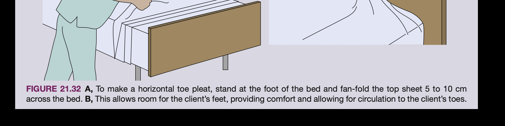
38. Tuck the top sheet, blanket, and bedspread together under the foot of the mattress, maintaining the toe pleat slack.
38. 在保持足褶宽松的前提下，将床尾多余被服一起平整塞入床垫下方。
42. Lift the mattress corner with one arm. Tuck all top linens under the mattress together. Make a mitred corner.
42. 用一只手臂抬起床垫角，将所有上层被服一起整齐塞入床垫下，制作规整的床尾信封折角。
43. Raise the bed rail if it was used. Go to the other side, and lower that bed rail.*
43. 升起该侧床栏并锁好。绕行至病床对侧，放下该侧床栏。*
44. Straighten and smooth top linens on the other side.
44. 拉平对侧的上层被服与被口封边。
45. Tuck the top linens under the mattress at the foot of the bed. Make a mitred corner.
45. 将床尾被服塞好并制作对侧信封折角。
46. Change the pillowcase(s). Gently support the client’s head and neck while replacing the pillow. Ensure the open end faces away from the door.
46. 更换枕套。在撤换枕头时轻柔托扶案主头颈部，平稳放回头部下方。确保枕套开口端背向房门。
47. Raise the head of the bed to a level appropriate for the client, or use pillows to position the client comfortably.
47. 根据护理计划与案主舒适度将床头抬高至适宜角度（如半福氏位），或利用软枕将案主摆放至舒适功能位。
48. Provide for safety and comfort. Ensure the client feels comfortable, warm, and well aligned.
48. 全面核查案主的安全与舒适度：询问感受，确保保暖充分、肢体对称处于生理对齐状态。
49. Place the call bell within easy reach of the client.* This provides an easy, safe way for the client to contact staff, if necessary.
49. 将紧急呼叫铃放置在案主伸手可及的掌心或床栏上！* 确保案主在任何需要时能瞬间联络医护人员。
50. Lower the bed to its lowest position. Follow the care plan for bed rail use.* Ensure bed wheels are locked.
50. 立刻将病床降至最低水平位置！* 根据照护计划升起防护床栏，并再次脚踩确认脚轮刹车锁紧。
51. Follow your employer’s policy for care of soiled linen. Remove the laundry bag from the room promptly.
51. 封好污衣收集袋并立即移出居室送往污衣间，严格遵守机构感染控制政策。
52. Remove privacy measures, as needed (open curtains or doors according to client preference).
52. 根据案主意愿拉开隔帘或开启房门。
53. Perform hand hygiene.
53. 规范洗手消毒。
*带星号步骤针对机构住院与居家照料有所微调，但保障案主触手可及呼救与防跌倒原则绝对无妥协。
• The basic bed positions are the flat position, Fowler’s positions, the Trendelenburg position, and the reverse Trendelenburg position. The care plan will tell you which position to place the client in. The client’s position depends on their condition.
• 基本病床体位包括水平平卧位、福氏卧位（低/半/高）、特伦德伦伯格卧位与反特伦德伦伯格卧位。照护计划会明确指定案主的体位要求，其摆放严格取决于案主的临床病情。
• The linens required for bed making and the frequency of linen changes will vary among health care settings. Follow your employer’s policies.
• 铺床所需的床品种类以及更换频次在不同照护环境（居家、长照、医院）中各不相同，支持工作者必须严格遵守所在机构的规章制度。
• Clean linen must be held away from your uniform to prevent transfer of microorganisms, and dirty linen must be removed with gloves and placed into the receptacle approved by your employer.
• 洁净床单必须抱离工作服以防沾染病原菌；换下的脏床单必须戴手套操作、朝远离身体方向向内卷叠，并立即投入合规的污衣袋或收集容器中。
• A closed bed is made when the bed is expected to be unoccupied for a while; the top linens are pulled up, with the top sheet folded over the bedspread into a cuff or the bedspread pulled neatly over the pillows, as per facility policy. An open bed is made shortly before the bed is to be occupied; top linens are folded back so that the client can easily get into bed. An occupied bed is made with the client in it.
• 闭式床（备用床）在床位预计较长时间无人使用时铺设，上层被服完全向上拉展防尘；开式床（暂空床）在案主即将上床前铺设，被服呈扇形折叠至床尾方便上床；有人床是在案主卧床状态下分侧进行的床品更换。
• One of the most important concepts in this chapter to remember is that the bottom sheet, next to your client’s skin, needs to be wrinkle free to prevent skin irritation, which can lead to skin breakdown of buttocks, ankles, and elbows and to bedsores.
• 本章最至关重要、终生恪守的核心原则是：紧贴案主皮肤的底层大单必须彻底拉平拉紧、绝对平整无褶皱！任何微小的褶皱都会形成局部高压与剪切力，直接导致臀部、尾骶部、踝关节及手肘皮肤破溃坏死，酿成严重压疮。
• Use good body mechanics to reduce your chance of injury when making a bed.
• 铺床全程务必运用科学的身体力学原理（调高床位、屈膝下蹲、避免过度弯腰），切实预防自身职业性脊柱腰背劳损。
Scenario: You need to give a person a bath in bed (see Chapter 17) and change linens. The person must remain in bed. Which type of bed will you make? Will you change linens or give the bath first? While changing linens, identify when you need to apply and remove gloves and practise hand hygiene.
临床实战情境：您需要为一位必须绝对卧床的案主进行床上擦浴（见第 17 章）并彻底更换床单。您应该铺设何种类型的床？您会先换床单还是先擦浴？在整个更换床品过程中，请准确指出何时必须佩戴手套、脱除手套并执行手卫生？
Clinical Solution:
1. Bed Type: You will make an occupied bed.
2. Sequence: Always give the bedbath first, and then change the linens (or change the linens concurrently as you turn the client to wash their back and buttocks). If you change linens before bathing, the clean new linens will become damp and contaminated with wash water, soap, and shed microbes during the bath.
3. Aseptic Timing: Wear clean gloves during bathing and when stripping soiled linens. Remove and discard gloves after washing perineal areas/handling dirty linen; perform hand hygiene; then apply clean gloves or use clean hands to handle and smooth the clean linen foundation.
临床专家深度解析：
1. 床型选择：必须铺设有人床（occupied bed）。
2. 操作先后顺序：必须先实施床上擦浴，随后更换床品被服（或在协助案主侧卧擦洗背部与臀部时，同步完成该侧旧单卷除与新单铺展）。若先换床单再擦浴，洗澡水滴、肥皂液及清洗脱落的微生物必然会将新床单浸湿弄脏，造成重复污染与资源浪费！
3. 手套与手卫生节点：在擦洗身体及拆卸触碰被分泌物、体液污染的旧床单时必须戴手套；擦拭完臀部会阴部并卷好旧床单后，必须立即脱除手套扔入医废桶；洗手或手消毒后，再用洁净手或换戴洁净手套拿取并拉平新床单，切断交叉感染链！
Answers to these questions are at the bottom of page 479. Circle the BEST answer.
标准答案见第 479 页底部。请选出每一题的最优答案。
Official Publisher Answers: 1.C, 2.B, 3.A, 4.B, 5.A, 6.A, 7.B, 8.B, 9.A
出版社官方标准答案：1.C, 2.B, 3.A, 4.B, 5.A, 6.A, 7.B, 8.B, 9.A
Chapter Opener Image Credit: CanStock Photo Inc./monkeybusiness.
开篇图源致谢：CanStock Photo Inc./monkeybusiness。